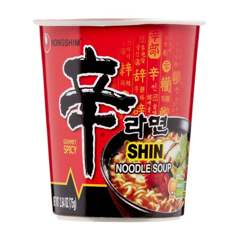

Instant Noodles

Description
These noodles are the ultimate meal for gamers and programmers alike. Anybody who watches anime or is a lazy cook undoubtedly has cases of these in their kitchen. Instant Noodles are the ultimate meal for those who simply don't have the time to cook. Eat these with Caution.
Ingredients
- Shin Spicy Instant Noodles Pack
- 2 Cups of Water
Steps
- Open instant ramen cup and remove the vegatables and seasoning packs.
- Add water to ramen to dotted fill line.
- Add the vegetables to the ramen cup and be sure they are completely immersed in the water.
- Cook ramen in microwave for 3 minutes.
- Remove ramen immediately when done. Add spices and mix.
- Optional: Add an ice cube or a small amount of cold water to cool down the broth. This allows you to eat the ramen before the noodles have a chance to get spongy from sitting in the water for too long.